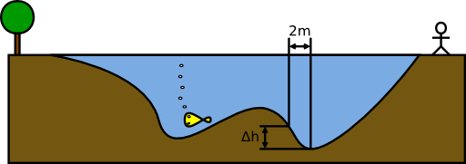

Labor, 4. hét: tömbök
Pohl László, Czirkos Zoltán · 2015.02.18 · Frissítve: 2015.02.15
Tömbök létrehozása és kezelése. Egyszerű algoritmusok megvalósítása tömbökön.
Felkészülés a laborra:
- A tömbökről szóló előadás átismétlése.
- A tömbökről szóló gyakorlat átismétlése.
1Legkisebb
Írj programot, amely tartalmaz egy tíz elemű tömböt, az általad megadott kezdeti értékekkel! Írd ki ezt a tömböt!
Írj programrészt, amely megmondja, melyik a legkisebb szám a tömbből! Írd ki ezt a számot! (Próbáld ki a programod úgy is, hogy a legkisebb szám a tömb legelején és legvégén van!) Írj programrészt, amely megkeresi a legkisebb elemet – és utána úgy írja ki a tömböt, hogy a legkisebb elem mellé tesz egy jelzést!
A tömb: 25 69 54 8 77 6 29 10 3 98 A legkisebb: 3 Jelölve: 25 69 54 8 77 6 29 10 3[MIN] 98
Megoldás
#include <stdio.h>
int main(void) {
int tomb[10] = { 25, 69, 54, 8, 77, 6, 29, 10, 3, 98 };
int i, min;
/* Kiírás */
printf("A tömb:");
for (i = 0; i < 10; ++i)
printf(" %d", tomb[i]);
printf("\n\n");
/* Keresés */
min = 0;
for (i = 1; i < 10; ++i)
if (tomb[i] < tomb[min])
min = i;
/* Kiírás */
printf("A legkisebb: %d\n", tomb[min]);
printf("Jelölve:");
for (i = 0; i < 10; ++i) {
printf(" %d", tomb[i]);
if (i == min)
printf("[MIN]");
}
printf("\n");
return 0;
}
2A folyó
Egy folyó sodrásirányára merőlegesen 2 m-enként megmértük a meder mélységét, és egy valós tömbben sorfolytonosan eltároltuk. Így az alábbi 18 számot kaptuk:
0.1, 1, 1.5, 1.7, 2, 2.3, 2.8, 4.5, 9.8, 12, 14.1, 13, 11.9, 8.7, 6.1, 3.5, 1, 0.5
Készíts programot, mely meghatározza, hogy hol a legmeredekebb a mederfal, és hány a százalékos meredeksége! (A százalékos lejtés azt mutatja, hogy egységnyi táv alatt mennyit változott a magasság: 10 m távon 5 m különbség 50%-os lejtőt jelent.)
Tipp
Melyik programozási tétel kell itt? A meredekségnek mijét kell meghatározni? Vigyázz, a lejtő és az emelkedő ugyanaz, ha másik irányból nézzük, és vigyázz, ne indexeld túl a tömböt!
A printf()-nél a %% jelenti a % jel
kiírását.
Megoldás
#include <stdio.h>
#include <math.h>
int main(void) {
double folyo[18] = { 0.1, 1, 1.5, 1.7, 2, 2.3, 2.8, 4.5, 9.8,
12, 14.1, 13, 11.9, 8.7, 6.1, 3.5, 1, 0.5 };
int i, max;
/* Keresés */
max = 0;
for (i = 1; i < 18-1; ++i) /* i+1 indexelés miatt! */
if (fabs(folyo[i+1] - folyo[i]) > fabs(folyo[max+1] - folyo[max]))
max = i;
/* Kiírás */
printf("A legmeredekebb: max=%d-%d méter között\n", max*2, (max+1)*2);
printf("A meredekség: %f %%-os\n", fabs(folyo[max+1]-folyo[max])/2*100);
return 0;
}
3Túlindexelés
Mi történik a következő program futtatásakor?
#include <stdio.h>
int main(void) {
int tomb[10], i;
for (i = 0; i < 10; i += 1)
tomb[i] = i;
i = 0;
while (1) {
printf("%d. elem: %d\n", i, tomb[i]);
i += 1;
}
return 0;
}
4Tömb léptetése
25 69 54 8 77 6 29 10 3 98 69 54 8 77 6 29 10 3 98 25 54 8 77 6 29 10 3 98 25 69 8 77 6 29 10 3 98 25 69 54 77 6 29 10 3 98 25 69 54 8 6 29 10 3 98 25 69 54 8 77 29 10 3 98 25 69 54 8 77 6
Írj egy programot, amely tartalmaz egy általad megadott értékekkel feltöltött, tíz elemű tömböt! Írja ki a program ezt a tömböt a képernyőre!
Léptesd egy tömb összes elemét eggyel az eleje felé. A tömb egyik végén kilépő elem jöjjön be a túlsó végén. Ismételd meg ezt a műveletet tízszer, közben mindig írd ki a tömböt! Az eredmény a jobb oldalon láthatóhoz hasonló kell legyen.
Tipp
Segédtömbre ehhez nincs szükség! Az első felülírható a másodikkal, a második a harmadikkal… Kérdés, az utolsó helyre ilyenkor mi kerül. Rajzold le, és gondold végig úgy, minek kell történnie!
Megoldás
#include <stdio.h>
int main(void) {
int tomb[10] = { 25, 69, 54, 8, 77, 6, 29, 10, 3, 98 };
int i, j, tmp; /* Ideiglenes változó */
/* Kiírás és elemek léptetése 10szer */
for(j = 0; j < 10; j++) {
/* Kiírás */
for(i = 0; i < 10; i++)
printf("%2d ",tomb[i]);
printf("\n");
/* Léptetés */
tmp = tomb[0]; /* Az első elemet kell félretenni */
for(i = 0; i < 9; i++)
tomb[i] = tomb[i+1]; /* Léptetés */
tomb[9] = tmp; /* Az utolsó elem a régi első lesz */
}
return 0;
}
5Az utolsó öt szám… átlaga
Írj C programot, amely a felhasználótól számokat kér be. A bevitel addig tartson, amíg a felhasználó 0-t nem ad meg. Amikor ez megtörtént, a program írja ki az utoljára bevitt öt szám átlagát! (Tegyük fel, hogy volt legalább ennyi.)
Tipp
A gondolat, hogy „csinálok egy egymillió elemű tömböt, abba biztos belefér majd az összes szám”, elvi hibás. Gondold végig, hogy a feladat megoldásához hány számot kell mindenképpen eltárolni! Szükség van-e ehhez egyáltalán tömbre? Ha igen, akkor mekkorára? Kell-e úgy tologatni az elemeket a tömbön belül, mint az előző feladatban?
Megoldás
#include <stdio.h>
int main(void) {
double szamok[5], beolv, szum;
int i;
printf("Szám vagy 0? "); /* első */
scanf("%lf", &beolv);
i = 0;
while (beolv != 0) {
szamok[i] = beolv;
i = (i+1) % 5; /* 4 után megint 0 */
printf("Szám vagy 0? "); /* következő */
scanf("%lf", &beolv);
}
szum = 0;
for (i = 0; i < 5; i += 1)
szum += szamok[i];
printf("Utolsó 5 átlaga: %f\n", szum/5);
return 0;
}
6További feladatok
Ha elkészültél, folytasd a feladatgyűjtemény ehhez a témakörhöz kapcsolódó tömbös feladataival!